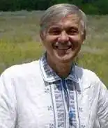
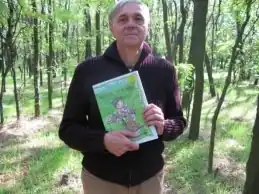

Олександр Євгенович Виженко народився 10 вересня 1958р. на Полтавщині та здобув вищу освіту за спеціальністю актор. Близько 30 років працював у Запорізькому театрі юного глядача. 1992 року став переможцем міжнародного конкурсу молодих письменників "ГРАНОСЛОВ".
О.Виженко є автором таких відомих книг, як "Історія запорозьких козаків для веселих дітлахів", "Легенди та казки Хортиці", "Козацькі забави", "Хлопчик Укропчик".
Під псевдонімом Санько Сіто письменник читав свої казки в авторській передачі "Казки запорозькі від Санька Сита" на каналі "Суспільне Запоріжжя". 1992 року було видано першу частину книги "Історія запорізьких козаків для маленьких дітлахів". Скільки дітей виросло на цих книжках! І багато хто купив уже своїм дітям новинку від автора. У 2018 році письменник видав дитячу книгу "Хлопчик Укропчик", тут переплелися захоплюючі пригоди, правда життя та любов до України. Загалом Майстер написав близько 135 казок. До речі, у youtube можна знайти їх у виконанні автора під псевдонімом Санько Сіто. Крім дитячих казок у творчому доробку Виженка є й серйозні фольклорні дослідження, написані в унікальному авторському стилі. Так у творі "УКРАЇНА КОХАННЯ" автор показав Любов такою, якою вона є. Майстер слова розкриває тему сексуальності українців, тут немає місця сорому, невинності та непорочності, тут усе по-справжньому, але водночас кожне слово пронизане любов'ю. Унікальне переплетення фольклорних мотивів та гарного поетичного слова з гарячою темою роблять книгу яскравою та незабутньою. Ще одним яскравим явищем у літературі стали "Сонет пана Шекспіра". Переклади шекспірівських сонетів у виконанні Виженка чудові. Літературна спадщина запорізького автора включає унікальний авторський переклад більш ніж 200 пісень "Бітлз", частину цих перекладів виконує черкаський гурт "Спів братів". Цікавим є і переклад пісень шведського гурту "АББА". За плечима цієї світлої людини не лише величезна кількість якісних літературних перекладів, дитячих казок та авторських творів для дорослих, а й понад 50 ролей у найкращому запорізькому театрі. Протягом багатьох років (1985-2012рр) Олександр Виженко був актором Запорізького Академічного Театру Молоді, на той час ТЮГу. Саме тут у театрі запорожці прощалися зі своїм талановитим земляком 26 грудня 2018 р.